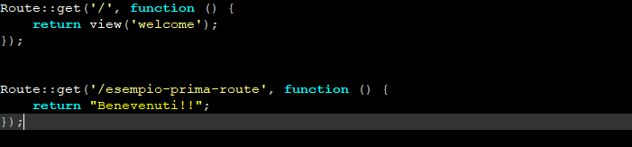
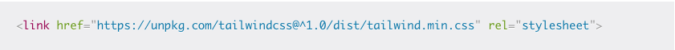
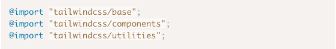
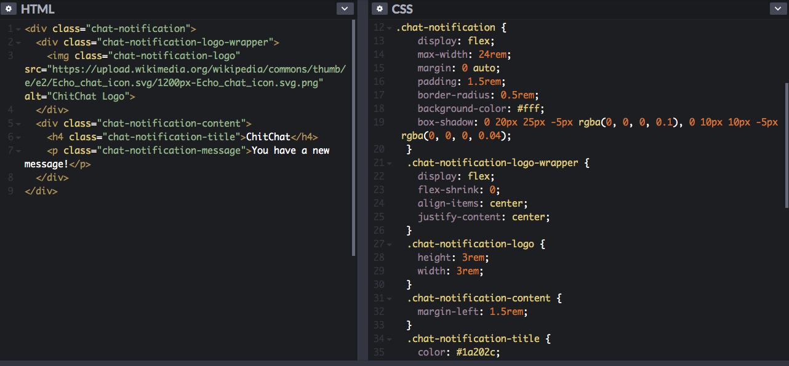

Il Framework Tailwind CSS
Tailwind è un framework CSS, utilizzato per semplificare la scrittuta di css all'interno di siti web, che si propone come alternativa a soluzioni più tradizionali ed abbondantemente diffuse come Bootstrap o w3.
Si contraddistingue per l’approccio diverso, non più basato sullo scrivere direttamente codice CSS o utilizzando classi che realizzano elementi già preconfenzionati, bensì sfruttando una serie di classi di utility molto specifiche (in alcuni caso mappate 1 ad 1 con le proprietà CSS) per implementare le nostre idee direttamente nelle pagine HTML.

Vantaggi
- Permette di scrivere direttamente lo stile all'interno dell'HTML, senza mai lasciare il file.
- Facile da utilizzare da qualunque tipo di utenza, compresi i programmatori alle prime "armi".
- Dotato di una documentazione completa e facilmente accessibile.
- La maggior parte dei progetti Tailwind invia meno di 10 KB di CSS al client, quindi è estremamente leggero.
- Completamente responsive.
Svantaggi
- E' più difficile ricordare tutte le classi rispetto ad altri framework (Si può rimediare con un estensione).
- L'HTML generato potrebbe risultate verboso ed estremamente lungo
Trucchetti
Se il problema è ricordarsi tutti i nomi delle classi l'estensione Tailwind CSS IntelliSense per VS Code fa per te.
Ottieni suggerimenti di completamento automatico intelligente, definizioni di classi e altro ancora, tutto all'interno del tuo editor e senza necessità di configurazione.
Installazione
Il modo più semplice (ma meno personalizzabile) è l'inclusione all'interno del proprio progetto del link di import dello stile.

L' altro metodo d'installazione di Tailwind potrebbe risultare un po’ più complicato. È possibile scaricarlo come modulo NodeJS sia tramite NPM sia con l’alternativa Yarn.
npm install -D tailwindcss@npm:@tailwindcss/postcss7-compat @tailwindcss/postcss7-compat postcss@^7 autoprefixer@^9
Utilizzo
Tailwind CSS è compilato tramite PostCSS, quindi per utilizzarlo basta creare un file .css per importare le dipendenze appena scaricate.

Personalizzazioni
La configurazione viene espressa tramite un file Javascript, permettendoci quindi una flessibilità importante.
Il file di configurazione serve per modificare, anche radicalmente, il file CSS generato dal framework e permette di definire il design system utilizzato dalla nostra applicazione, così da avere un set di classi CSS di utility che si adattano perfettamente al nostro layout.
È possibile generare un prototipo di file tramite il comando npx tailwind init (è necessario installare il pacchetto npx con npm install -g npx).
Aggiungendo invece l’opzione --full, il file generato conterrà tutte le opzioni possibili:
module.exports = {
important: true,
theme: { },
variants: { },
plugins: { },
prefix: '',
separator: '-',
corePlugins: { }
}
TailwindCSS vs CSS Tradizionale
Di seguito una piccola comparativa tra tailwind e il CSS tradizionale.
Come si può notare, con TailwindCSS è possibile sia ridurre la quantità di codice da scrivere che aumentare la chiarezza dei propri intenti di layout.
Tailwind CSS 